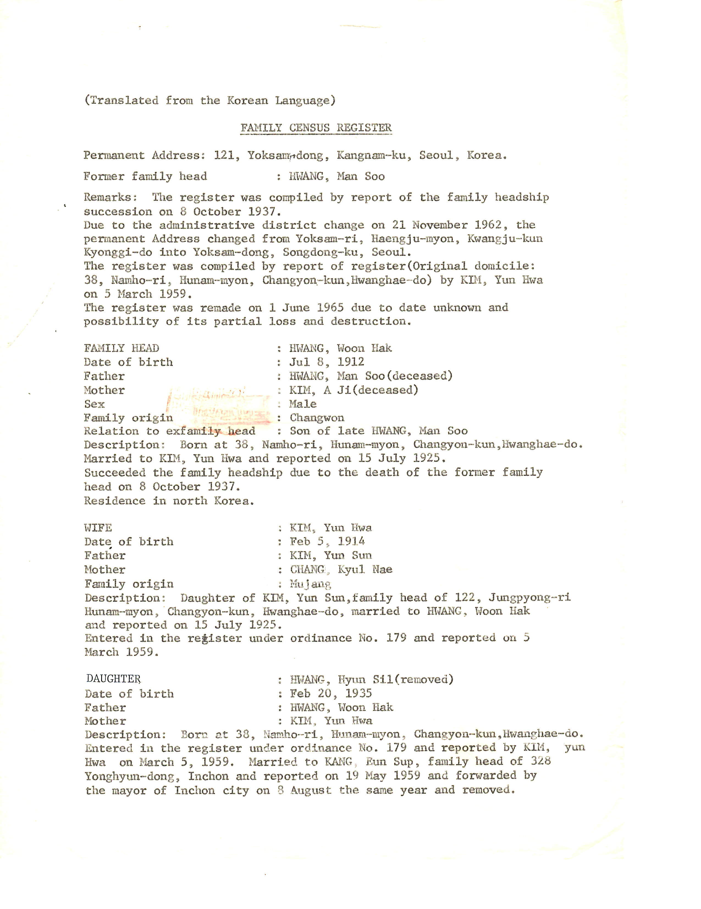

My maternal grandfather’s family roots are at
조선 평안남도 강서군 철면 송포리
However, he spent most of his life at
조선 황해도 장연군 후남면 남호리 291
In what is now designated as North Korea.
However, if you enter the address, it directs you to a building in Seoul, near 여의도.
The location is the home of 황해도장연군중앙군민회.
Chat GPT translates it as
Central County People’s Association of Jangyeon County, Hwanghae Province [link](http://ww.hwanghaedo.or.kr/ab-2127
Its homepage says there are 3.5 million residents of Korea that call 황해도 their original home.
If the search word is changed to 황해도장연군, this map appears
The marker points to the train station.
If the train lines were restored, 장연군역, which is approximately 120 miles, WNW direction from Seoul, could be reached in less than 2 hours.
People of the area, would be aware of our arrival.
A distant cousins would meet us and welcome us, simply because we are descendants of 황운학 (黃雲鶴).
We would go around the orchards that used to belong to the family and mercantile building where 협상상회 once stood.
We would spend a couple days getting caught up on the family trees of the Hwang Clan.
Next we would visit grave sites of Hwang family as well as Kim Family.
My maternal grandmother 김연화 is from a near by town of 정평리.
Her father was 김유선 (of 무장 김 본관) and her mother was 장귤래.
According to records, my grandfather was born in 1912 and my grandmother in 1914.
Grandfather Hwang was both industrious and entrepreneurial.
He had inherited not only land and building, he expanded orchards and businesses.
He would often go to Incheon and buy goods to sell at his general store.
His general store doubled as an outlet for 毎日新聞.
Grandmother Kim was the most fashionable lady in town. Often wearing western style dresses that Grandpa purchased in 인천.
Grandpa Hwang didn’t sing well. But Grandma Kim was a renowned for her singing talent.
Grandpa would invite Grandma to sing at various events. Her go to number was 눈물젖은 두만강 The song was introduced in 1938.
강물도 달밤이면 목메어 우는데 님 잃은 이 사람도 한숨을 지니 추억에 목메인 애달픈 하소연 그리운 내 님이여
As described the song, life’s fortunes can change quickly.
Grandpa took ill and passed away while waiting for his doctor brother to arrive.
Grandma became a widow with 6 children that were younger than 14 years old.
She tried to make things work, with help from relatives.
However when communists took over, her properties now belonged to the state.
Those that had worked for Grandpa had brough food for her family, but those ended quickly under the system of rationing.
Recognizing there was no prospect of survival, she made a difficult decision to leave her home.
My mother was 18, and was the oldest.
She carried the burden, along with her mom, of being the head of a family of 7 people.
A record of their escape is recorded here

My grandmother Kim passed away in 1999, the year we returned to Korea.
Her only son preceded her.
Now there are 3 surviving Hwang sisters.
There is one more sister, 현숙.
She is 1 year younger than my mother.
She took place of my mother and went to 원산 to be with an aunt who lost her husband in an industrial accident.
After the bombing of bridges and roads, she could not make it back home and leave North Korea.
She would be 92, if she survived the war and the aftermath.
I am grateful for the stories and memories my mother shared with me.
I can almost picture the hills, orchards, and streams she mentioned in her tales.
I hope to return to her hometown someday.
If that is not to be, I would like my children and grandchildren to know where their family originated.
The place north of DMZ, north of 38th Latitude.
To a place, soon flowing with orchards and dotted with general stores.
- March 2025
Hwang Family Record
